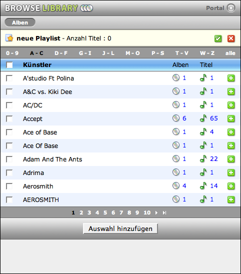
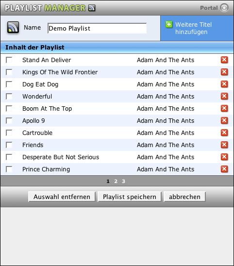
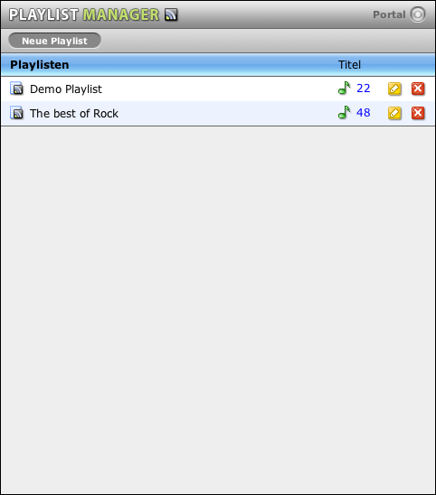

MyTunesRSS Playlisten
In MyTunesRSS können Sie neben den iTunes Playlisten auch eigene MyTunesRSS Playlisten erstellen und verwalten. Um einen neue Playliste anzulegen, klicken Sie im Playlist Manager oder auf der Alben-, Künster- oder Titelliste auf den Link "neue Playlist". Sie gelangen dadurch in den Playlisten Modus, den Sie daran erkennen, dass über dem Portal und der Alben-, Künstler- und Titelliste noch ein Bereich eingeblendet ist, der den aktuellen Namen und die Anzahl der Titel in der Playliste zeigt. Eine neue Playliste hat keinen Namen. Das folgende Bild zeigt diesen Bereich am Beispiel der Künstlerliste.
In diesem Modus verändern sich auch die Listenansichten. Sie können nun keine M3U Playlisten und RSS Feeds mehr erzeugen, sondern alle Titel eines Albums oder Künstlers oder eine beliebige Auswahl aus der Titelliste mit den Plus-Icons am Ende der Zeilen hinzufügen. Die Anzahl der Titel in der Playliste wird automatisch angepaßt. Sie können keine Titel doppelt hinzufügen. Wenn Sie mehrere Einträge einer Seite hinzufügen wollen, können Sie diese auch links selektieren und dann mit dem Button unter der Liste hinzufügen. Die Checkbox neben der Überschrift selektiert alle Alben oder Künster auf der aktuellen Seite.
Wenn Sie alle gewünschten Titel hinzugefügt haben, klicken Sie auf den grünen Haken am Ende des gelben Bereichs. Damit gelangen Sie in den Playlisteditor. Mit dem roten X wird die ungespeicherte Playliste verworfen und der Playlistenmodus verlassen. Im Editor können Sie den Namen der Playliste setzen, einzelne Titel wieder entfernen und die Playliste speichern. Sie können die Seite auch mit dem Link oben rechts verlassen und weitere Titel hinzufügen. Der Abbrechen-Button unten rechts ist nur verfügbar, wenn Sie eine bestehende Playliste bearbeiten. Dann werden die aktuellen Änderungen verworfen.
Vom Portal aus gelangen Sie auf den Playlist Manager. Auf dieser Seite können Sie Ihre vorhandenen MyTunesRSS Playlisten bearbeiten und löschen. Wenn Sie eine Liste bearbeiten, gelangen Sie auf die Editor Seite wie eben beschrieben. Im Playlist Manager können Sie sich auch die Titelliste einer Playliste anzeigen lassen.
